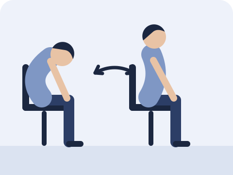
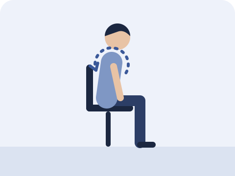
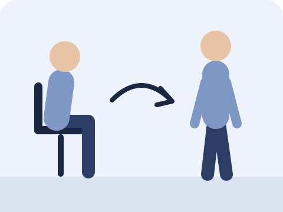

In this article
Do your neck and shoulders feel stiff when you stand up after a long meeting? This article explains why, and introduces three simple exercises you can do without leaving your chair.
Why the neck and shoulders stiffen after meetings
Many people assume neck pain comes from poor posture. Research suggests, however, that there is no single "correct" sitting posture that prevents pain.
Sitting very upright or slumped, if held for too long, can tire the muscles and lead to stiffness or pain.
Your best posture is your next posture.
So rather than reminding yourself to "sit up straight" all day, change position regularly.
Three exercises you can do while seated
No need to stand up, and no equipment required. During meetings or long periods at the computer, do one round every so often.

Seated cat-cow
Sit towards the front of your chair with your hands on your thighs. Slowly round your back and tuck your chin, then slowly lift your chest and look slightly upwards.
Slowly | Repeat 10 times

Backward shoulder circles
Sit tall with your arms relaxed by your sides. Slowly lift your shoulders, then roll them back and down.
Slowly | 10 circles backwards

Change position
For example, stand up when you take a call. This is a practical suggestion, not a time interval established by research.
About every 30 minutes
Points to note
- Move slowly; avoid going too fast or using too much force.
- The exercises should not cause pain. If they do, stop.
When to seek medical advice first
Please see a doctor or physiotherapist first if you have:
- numbness or tingling in the arm or hand
- dizziness
- neck pain and headache after an injury
- pain that has not improved after several weeks
Common questions
Do I need to sit perfectly straight to prevent neck pain?
Not necessarily. Research suggests no single posture prevents pain; changing position often matters more than holding an upright posture for long periods.
Does exercising at work help neck pain?
A systematic review combining several trials found that exercise carried out in the workplace helped neck pain in office workers, although results vary between individuals.
How often should I do these exercises?
Do one round every so often during meetings or long periods at the computer, keeping it pain-free. If symptoms persist or warning signs appear, please see a doctor or physiotherapist.
References
- Slater D, et al. Sit up straight: time to re-evaluate. J Orthop Sports Phys Ther 2019;49(8):562–564. PubMed
- Chen X, et al. Workplace-based interventions for neck pain in office workers: systematic review and meta-analysis. Phys Ther 2018;98(1):40–62. PubMed
This article is for general reference only and does not replace professional diagnosis or treatment. If symptoms persist or warning signs appear, please see a doctor or physiotherapist.